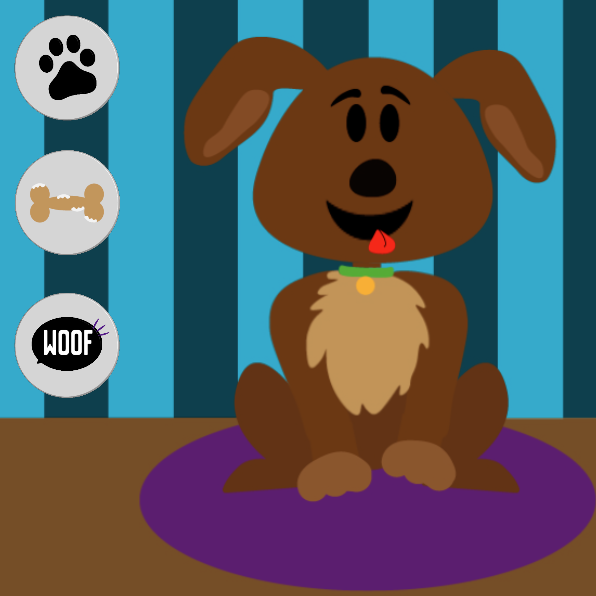
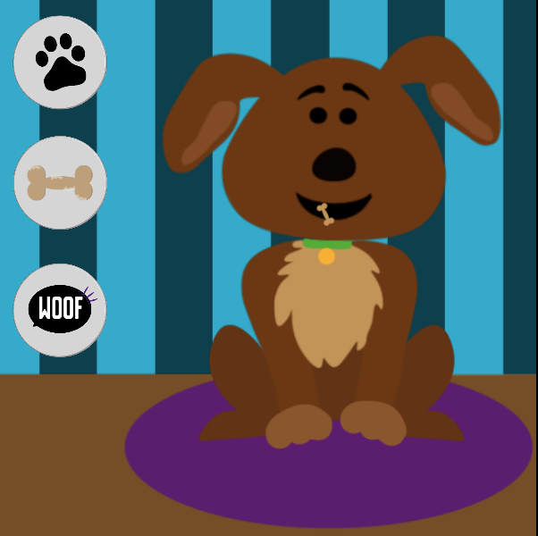
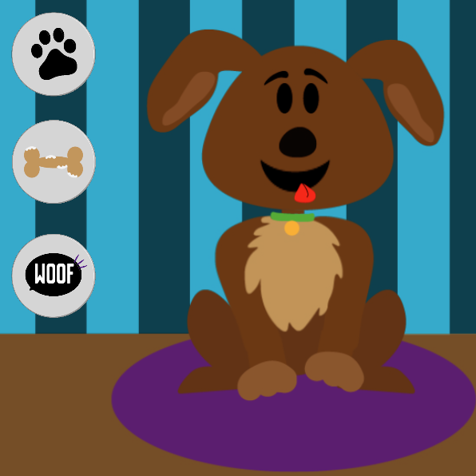
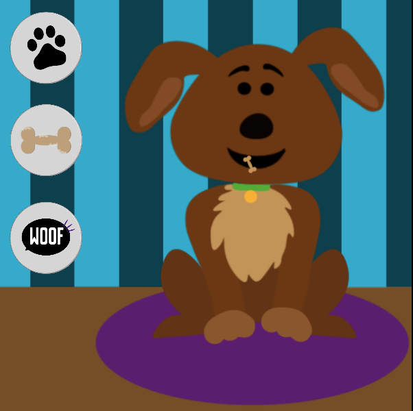

Interface &
Beweging
"Voor het vak Interface & Beweging heb ik een animatie gemaakt van een hond. Deze heb ik eerst geschets door middel van Illustrator en vervolgens drie geanimeerde functies gegeven in Principle. Ik vond dit vak erg uitdagend, vooral omdat ik hierbij kennis maakte met verschillende nieuwe programma's als Principle en Adobe After Effects".
 



Publicatie